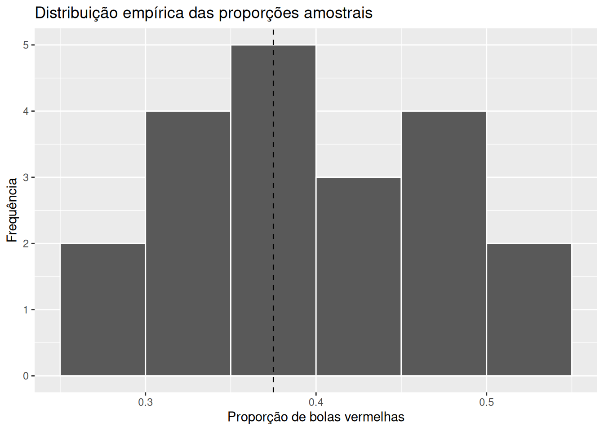

library(tidyverse)
library(moderndive)3 Fundamentos da Inferência Estatística
A inferência estatística utiliza informações obtidas em uma amostra para estudar características desconhecidas de uma população ou de um processo que produz dados. Como diferentes amostras podem gerar resultados diferentes, as conclusões obtidas a partir dos dados estão associadas à variabilidade e à incerteza.
Este capítulo apresenta os conceitos que estruturam esse processo. Inicialmente, são discutidos o problema inferencial, o processo gerador de dados, a população, os parâmetros e a amostragem. Um experimento com uma urna permite observar diretamente a variabilidade produzida por diferentes amostras. A partir dessa experiência, são formalizados os conceitos de estatística, estimador, estimativa, modelo estatístico e verossimilhança.
Ao final do capítulo, o experimento da urna é reproduzido e ampliado computacionalmente. Essa seção foi organizada de forma autônoma: pode ser utilizada logo após o experimento em sala de aula, de forma intercalada com o desenvolvimento conceitual ou depois da apresentação da teoria.
3.1 O problema da inferência estatística
Em muitas situações, deseja-se conhecer uma característica de uma população sem observar todos os seus elementos. Pode haver interesse, por exemplo, na proporção de eleitores favoráveis a determinado candidato, no peso médio de um produto fabricado por uma empresa ou no tempo médio de funcionamento de determinado equipamento.
Quando a observação de toda a população não é possível ou conveniente, utiliza-se uma amostra. As informações obtidas nessa amostra são utilizadas para estudar a característica de interesse na população. De forma geral, esse processo pode ser representado por
\[ \text{população} \longrightarrow \text{amostra} \longrightarrow \text{informação sobre a população}. \]
ImportanteInferência estatística
A inferência estatística utiliza dados observados para obter informação sobre características desconhecidas da população ou do processo que gerou os dados.
A amostra observada corresponde a apenas um dos possíveis conjuntos de dados que poderiam ser obtidos. Se o procedimento de amostragem fosse repetido, outros elementos poderiam ser selecionados e os resultados calculados a partir deles poderiam ser diferentes. Assim, a inferência estatística envolve a variabilidade associada aos dados observados.
Para representar essa variabilidade e estabelecer procedimentos inferenciais, é necessário considerar como os dados são produzidos. Esse é o ponto de partida para o conceito de Processo Gerador de Dados.
3.2 Processo Gerador de Dados (PGD)
Os dados observados resultam de algum mecanismo que determina quais valores podem ocorrer e como esses valores são produzidos. Esse mecanismo será denominado Processo Gerador de Dados (PGD).
O PGD pode envolver diferentes componentes, como características da população, seleção das unidades observadas, condições de medição, fontes de variabilidade e relações de dependência entre as observações. Em um experimento controlado, parte desse processo pode ser estabelecida pelo pesquisador. Em estudos observacionais, vários de seus componentes podem ser desconhecidos ou apenas parcialmente conhecidos.
Podemos representar esquematicamente esse processo por
\[ \text{fenômeno} \longrightarrow \text{PGD} \longrightarrow \text{dados observados}. \]
Os dados constituem uma realização particular do processo. Se o mecanismo fosse repetido sob as mesmas condições, outros conjuntos de dados poderiam ser observados.
O PGD real raramente é conhecido em todos os seus detalhes. Por essa razão, a análise estatística utiliza posteriormente um modelo estatístico, que fornece uma representação probabilística simplificada dos aspectos do PGD considerados relevantes para o problema estudado.
NotaPGD e hipótese i.i.d.
Em muitos modelos estatísticos, as observações são representadas por
\[ X_1,\ldots,X_n \overset{\mathrm{iid}}{\sim} F. \]
A condição i.i.d. estabelece que as variáveis são independentes e possuem a mesma distribuição. Essa é uma hipótese sobre o mecanismo de geração dos dados e não uma condição que define todo Processo Gerador de Dados.
Outros mecanismos podem produzir observações dependentes, distribuições diferentes entre unidades ou estruturas amostrais determinadas pelo plano de coleta.
3.3 Conceitos fundamentais
Uma população é o conjunto de unidades sobre as quais se deseja obter informação. Dependendo do problema, pode ser formada por pessoas, animais, objetos, empresas, municípios, medições ou outras unidades de interesse.
Quando a população é finita, seu tamanho será representado por \(N\).
Uma característica numérica da população ou do processo de interesse é denominada parâmetro. O parâmetro é tratado, na abordagem frequentista desenvolvida neste livro, como uma quantidade fixa cujo valor é desconhecido.
Por exemplo, podem constituir parâmetros:
- a média populacional \(\mu\);
- a variância populacional \(\sigma^2\);
- uma proporção populacional \(p\).
Um censo consiste na observação de todas as unidades de uma população finita. Quando o censo é possível e as medições são obtidas sem erro, uma característica da população pode ser calculada diretamente. Em muitas aplicações, observar toda a população é inviável em razão de custo, tempo, disponibilidade das unidades ou do próprio processo de medição.
Uma amostra é um subconjunto de unidades ou observações utilizado para obter informação sobre a população. Seu tamanho será representado por \(n\). A amostragem corresponde ao procedimento utilizado para selecionar essas unidades.
No experimento que será realizado em sala de aula, a população é formada por \(N=2400\) bolas de mesmo tamanho, das quais 900 são vermelhas e 1500 são brancas. A característica de interesse é a proporção populacional de bolas vermelhas,
\[ p = \frac{900}{2400} = 0{,}375. \]
Conhecemos \(p\) nesse experimento porque a composição completa da urna é conhecida. Essa informação será utilizada como referência para estudar o que ocorre quando apenas uma amostra da urna é observada.
Se uma amostra de tamanho \(n\) contém \(R\) bolas vermelhas, sua proporção de bolas vermelhas é
\[ \widehat p = \frac{R}{n}. \]
Neste momento, \(\widehat p\) será utilizado apenas como uma quantidade calculada a partir da amostra. Seu papel formal como estatística, estimador e estimativa será desenvolvido depois do experimento.
Mecanismo de seleção da amostra
A possibilidade de generalizar resultados da amostra para a população depende do mecanismo utilizado para selecionar as unidades.
Uma seleção que favoreça sistematicamente determinados elementos pode produzir viés de seleção. Por exemplo, se a retirada das bolas favorecer determinadas regiões da urna, as probabilidades de inclusão podem deixar de corresponder ao plano amostral pretendido.
Na amostragem aleatória, a seleção das unidades é realizada segundo um mecanismo probabilístico conhecido. Em uma amostragem aleatória simples sem reposição, todas as amostras de tamanho \(n\) possuem a mesma probabilidade de seleção.
A aleatorização não garante que cada amostra observada reproduza exatamente a composição da população. Amostras diferentes apresentam variação natural. Sua função é estabelecer um mecanismo de seleção que permita caracterizar probabilisticamente essa variabilidade e sustentar a inferência para a população considerada.
3.4 Experimento em sala de aula
O objetivo do experimento é observar como amostras diferentes, obtidas da mesma população pelo mesmo procedimento, podem produzir valores diferentes para a proporção amostral.
A população é a urna com \(N=2400\) bolas, das quais 900 são vermelhas. Portanto, a proporção populacional conhecida é \(p=0{,}375\).
Cada grupo realizará uma amostragem seguindo o mesmo protocolo:
- misturar cuidadosamente as bolas da urna;
- retirar, com uma pá de amostragem com 50 espaços, \(n=50\) bolas, sem reposição durante a formação da amostra;
- contar o número \(R\) de bolas vermelhas;
- calcular a proporção amostral \(\widehat p=R/50\);
- registrar os valores de \(R\) e \(\widehat p\);
- devolver todas as bolas à urna antes da amostragem do grupo seguinte e misturá-las novamente.
Cada grupo realiza uma amostragem separada. Os resultados dos grupos serão reunidos somente depois que todas as amostras tiverem sido obtidas.
Ao final, teremos valores
\[ \widehat p_1,\widehat p_2,\ldots,\widehat p_m, \]
em que \(m\) corresponde ao número de grupos.
Essas proporções serão organizadas em uma tabela e representadas por um histograma. A figura resultante mostra a distribuição empírica das estimativas obtidas pelos grupos e permite observar a variabilidade produzida pela repetição da amostragem.
Mesmo que todos os grupos utilizem a mesma população, o mesmo tamanho amostral e o mesmo procedimento, os valores de \(\widehat p\) não precisam coincidir. Essa variação decorre da seleção de conjuntos diferentes de bolas em cada amostra.
A distribuição amostral de \(\widehat p\) será definida formalmente no capítulo Distribuições Amostrais. O experimento fornece uma primeira representação empírica desse conceito.
Verificação de aprendizagem
- Explique a função da mistura da urna antes de cada amostragem.
- Explique por que diferentes grupos podem obter valores distintos de \(R\) e de \(\widehat p\), mesmo utilizando o mesmo tamanho amostral.
- Compare os valores de \(\widehat p\) obtidos pelos grupos com a proporção populacional \(p=0{,}375\).
- A partir dos resultados da turma, descreva o que permaneceu fixo e o que variou entre as diferentes amostras.
3.5 Estatísticas, estimadores e estimativas
Os resultados do experimento podem agora ser formalizados distinguindo a amostra antes da observação dos valores e a amostra efetivamente observada.
Antes da coleta, representamos a amostra por um vetor aleatório
\[\mathbf{X}=(X_1,\ldots,X_n).\]
Depois da coleta, os valores observados são escritos como
\[\mathbf{x}=(x_1,\ldots,x_n).\]
A convenção de usar letras maiúsculas para variáveis aleatórias e minúsculas para suas realizações permite separar o procedimento inferencial, definido antes de observar os dados, do resultado numérico obtido em uma amostra particular (Cox, 2006, seç. 1.1; Ramachandran; Tsokos, 2021, seç. 5.2, pp. 180–182).
ImportanteDistinção fundamental
Uma estatística é uma função das variáveis aleatórias que compõem a amostra e que não depende de parâmetros desconhecidos:
\[ T=g(X_1,\ldots,X_n). \]
Quando uma estatística é utilizada para estimar uma quantidade populacional \(\tau(\theta)\), ela recebe o nome de estimador. Antes da observação dos dados, o estimador \(\widehat\tau=T(\mathbf X)\) é uma variável aleatória.
A estimativa é o valor observado do estimador:
\[\widehat\tau(\mathbf x)=g(x_1,\ldots,x_n).\]
Assim, o estimador é a regra inferencial; a estimativa é o número produzido pela regra em uma amostra específica (Chihara; Hesterberg, 2022, definição 4.2, p. 79; Ramachandran; Tsokos, 2021, seç. 5.2, pp. 181–182).
Exemplos básicos
| Parâmetro de interesse | Estatística utilizada como estimador |
|---|---|
| média populacional \(\mu\) | \(\displaystyle \overline X=\frac{1}{n}\sum_{i=1}^nX_i\) |
| variância populacional \(\sigma^2\) | \(\displaystyle S^2=\frac{1}{n-1}\sum_{i=1}^n(X_i-\overline X)^2\) |
| proporção populacional \(p\) | \(\displaystyle \widehat p=\frac{1}{n}\sum_{i=1}^nX_i\), para \(X_i\in\{0,1\}\) |
O papel inferencial depende do objetivo. Por exemplo, \(\overline X\) é sempre uma estatística, mas somente é um estimador de \(\mu\) quando a média populacional é a quantidade de interesse. A mesma estatística pode ainda ser empregada para estimar outras funções do parâmetro, dependendo do modelo adotado (Chihara; Hesterberg, 2022, seç. 1.6 e definição 4.2; Ramachandran; Tsokos, 2021, seç. 5.2).
3.6 Exemplo-guia: modelo Bernoulli para a urna
Considere agora uma versão idealizada do experimento em que cada retirada é realizada com reposição e todas as bolas possuem a mesma probabilidade de seleção em cada retirada. Nesse modelo, as retiradas são independentes e a probabilidade de selecionar uma bola vermelha permanece constante.
Na urna utilizada em sala de aula, a proporção \(p=0{,}375\) é conhecida porque sua composição foi previamente estabelecida. Para introduzir o problema inferencial, consideraremos agora \(p\) como desconhecido e utilizaremos os resultados das retiradas para obter informação sobre essa proporção.
Defina
\[X_i= \begin{cases} 1, & \text{se a }i\text{-ésima bola é vermelha},\\ 0, & \text{se a }i\text{-ésima bola é branca}. \end{cases} \]
Se a probabilidade de uma bola vermelha em cada retirada é \(p\), então
\[X_1,\ldots,X_n\overset{\mathrm{iid}}{\sim}\operatorname{Bernoulli}(p).\]
O total de bolas vermelhas e a proporção correspondente são
\[R=\sum_{i=1}^nX_i \qquad\text{e}\qquad \widehat p=\frac{R}{n}. \]
Nesse exemplo, \(R\) e \(\widehat p\) são estatísticas. Quando o objetivo é estimar \(p\), a proporção amostral \(\widehat p\) funciona como estimador da proporção populacional (Chihara; Hesterberg, 2022, seç. 1.5, seção 1.6 e apêndice B.1).
AvisoCom ou sem reposição?
A representação i.i.d. de Bernoulli exige retiradas independentes, como ocorre na amostragem com reposição. Em uma urna finita amostrada sem reposição, as observações não são independentes e o total de bolas vermelhas possui distribuição hipergeométrica. A distinção entre esses dois planos amostrais e a correção para população finita são desenvolvidas no capítulo Distribuições Amostrais (Chihara; Hesterberg, 2022, seç. 1.5, pp. 5–6; Rice, 2007, seç. 7.3).
3.7 A variabilidade dos estimadores: uma antecipação
Como um estimador é uma função de variáveis aleatórias, amostras diferentes podem produzir estimativas diferentes. A distribuição de probabilidade do estimador sob repetições do mecanismo amostral é denominada distribuição amostral (Chihara; Hesterberg, 2022, definições 4.1–4.2, pp. 77–79; Ramachandran; Tsokos, 2021, seç. 4.1, pp. 147–151).
Neste capítulo, essa ideia é utilizada apenas para justificar por que uma estimativa deve ser acompanhada de uma avaliação de incerteza. O capítulo Distribuições Amostrais desenvolve formalmente:
- as distribuições de \(\overline X\), \(S^2\) e \(\widehat p\);
- esperança, variância e erro-padrão das estatísticas;
- o efeito do tamanho amostral;
- a amostragem sem reposição e a correção para população finita;
- resultados exatos, aproximações assintóticas e simulação.
Essa divisão evita repetir aqui as derivações probabilísticas que constituem o objeto central do capítulo seguinte.
3.8 Critérios para avaliar estimadores: visão panorâmica
Diferentes estimadores podem ser propostos para o mesmo parâmetro. A escolha entre eles exige critérios que descrevam tanto o desempenho em amostras finitas quanto o comportamento quando o tamanho amostral aumenta (Chihara; Hesterberg, 2022, seç. 6.3; Ramachandran; Tsokos, 2021, seç. 5.2).
| Critério | Aspecto avaliado |
|---|---|
| viés | diferença entre o valor esperado do estimador e a quantidade estimada |
| variância | variabilidade do estimador entre diferentes amostras |
| erro quadrático médio | efeito conjunto do viés e da variabilidade |
| consistência | aproximação do estimador ao parâmetro quando o tamanho amostral aumenta |
Para um estimador \(\widehat\tau\) de \(\tau(\theta)\), o viés e o erro quadrático médio são
\[B_\theta(\widehat\tau) = E_\theta(\widehat\tau)-\tau(\theta) \]
e
\[\operatorname{EQM}_\theta(\widehat\tau) = \operatorname{Var}_\theta(\widehat\tau) + B_\theta(\widehat\tau)^2. \]
Esses conceitos são apresentados aqui como um mapa da teoria. Sua análise detalhada, incluindo eficiência, suficiência e resultados de melhoria de estimadores, pertence ao capítulo dedicado à avaliação de estimadores.
3.9 Modelo estatístico e função de verossimilhança
O processo gerador de dados de um fenômeno real raramente é conhecido em todos os seus detalhes. A análise começa, portanto, com um modelo estatístico: uma família de distribuições que representa os aspectos do mecanismo considerados relevantes para a pergunta científica. Em um modelo paramétrico,
\[\mathcal P=\{P_\theta:\theta\in\Theta\}, \]
em que \(\theta\) é o parâmetro, ou vetor de parâmetros, e \(\Theta\) é o espaço paramétrico. Cada valor de \(\theta\) determina uma distribuição possível para os dados. O modelo é uma representação deliberadamente simplificada e sua adequação deve ser examinada no contexto da aplicação (Casella; Berger, 2002, cap. 1; Cox, 2006, seç. 1.1).
Função de verossimilhança
Suponha que a distribuição conjunta da amostra possua densidade ou função de probabilidade \(f_{\mathbf X}(\mathbf x;\theta)\). Depois de observados os dados \(\mathbf x\), a função de verossimilhança é
\[L(\theta;\mathbf x) = f_{\mathbf X}(\mathbf x;\theta), \]
considerada como função de \(\theta\), com \(\mathbf x\) fixado. Se as observações forem i.i.d., a densidade conjunta se fatoriza e
\[L(\theta;\mathbf x) = \prod_{i=1}^n f(x_i;\theta). \]
A forma em produto é consequência da independência, não parte da definição geral. Além disso, multiplicar \(L(\theta;\mathbf x)\) por uma função positiva dos dados que não dependa de \(\theta\) não altera as comparações de verossimilhança nem seus maximizadores (Cox, 2006, seç. 2.1, pp. 17–18; Casella; Berger, 2002, seç. 6.3).
AvisoProbabilidade e verossimilhança
Na distribuição \(f_{\mathbf X}(\mathbf x;\theta)\), fixa-se \(\theta\) e estudam-se os possíveis valores de \(\mathbf X\). Na verossimilhança \(L(\theta;\mathbf x)\), os dados observados são fixados e os valores de \(\theta\) são comparados.
Consequentemente, a verossimilhança não é, em geral, uma distribuição de probabilidade para \(\theta\). Ela expressa compatibilidade relativa entre valores paramétricos e os dados no modelo adotado, não a probabilidade de o parâmetro assumir determinado valor (Cox, 2006, seç. 2.1).
Verossimilhança no modelo Bernoulli da urna
No modelo de retiradas independentes,
\[f(x_i;p)=p^{x_i}(1-p)^{1-x_i}, \qquad x_i\in\{0,1\}. \]
Para uma sequência observada \(\mathbf x=(x_1,\ldots,x_n)\), com
\[r=\sum_{i=1}^n x_i, \]
a verossimilhança é
\[L(p;\mathbf x) = p^r(1-p)^{n-r}, \qquad 0\leq p\leq1. \]
Se apenas o total \(R=r\) for registrado, sua função de probabilidade é
\[P_p(R=r) = \binom nr p^r(1-p)^{n-r}. \]
O fator \(\binom nr\) não depende de \(p\). Portanto, a sequência completa e o total de sucessos produzem funções de verossimilhança proporcionais e conduzem ao mesmo estimador de máxima verossimilhança. A dependência dos dados em relação a \(p\) ocorre apenas por meio de \(r\), antecipando a ideia de redução de dados por suficiência.
Para \(0<r<n\), a log-verossimilhança é
\[\ell(p) = r\log p+(n-r)\log(1-p), \]
cujo máximo ocorre em
\[\widehat p_{\mathrm{MV}} = \frac{r}{n}. \]
O mesmo resultado permanece válido nos casos de fronteira: se \(r=0\), então \(\widehat p_{\mathrm{MV}}=0\); se \(r=n\), então \(\widehat p_{\mathrm{MV}}=1\) (Chihara; Hesterberg, 2022, seç. 6.1.1, pp. 148–150; Ramachandran; Tsokos, 2021, seç. 5.3).
NotaTrês papéis da proporção amostral
No modelo de Bernoulli, \(\widehat p=R/n\) é simultaneamente:
- uma estatística, porque é função da amostra;
- um estimador, porque é utilizada para estimar \(p\);
- o estimador de máxima verossimilhança de \(p\).
Os três papéis são conceitualmente distintos, embora sejam desempenhados pela mesma expressão matemática.
A máxima verossimilhança será desenvolvida como método geral de estimação no capítulo Métodos de Estimação Pontual. A ideia de suficiência, antecipada pela redução da sequência observada ao total \(R\), será formalizada no capítulo dedicado à avaliação e à redução de dados.
Verificação de aprendizagem
- Explique a diferença entre o estimador \(\widehat p\) e a estimativa obtida depois de observar os dados.
- Por que \(R=\sum_iX_i\) é uma estatística? Em que situação ele poderia ser tratado como estimador?
- Que modificação no mecanismo de amostragem da urna permite representar \(X_1,\ldots,X_n\) como variáveis i.i.d. de Bernoulli?
- Por que a forma \(\prod_i f(x_i;\theta)\) não é válida para qualquer plano amostral?
- Na função \(L(\theta;\mathbf x)\), quais elementos permanecem fixos e quais variam?
- Por que as verossimilhanças baseadas na sequência de retiradas e apenas no total \(R\) conduzem ao mesmo estimador de \(p\)?
3.10 Exploração computacional do experimento da urna
O experimento realizado em sala de aula pode ser reproduzido computacionalmente. O objetivo é repetir o mesmo mecanismo de amostragem um número maior de vezes e examinar com mais detalhes a variabilidade da proporção amostral.
Esta seção pode ser utilizada imediatamente após o experimento físico ou depois do desenvolvimento conceitual das seções anteriores.
Preparação do ambiente computacional
A exploração utiliza os pacotes tidyverse (Wickham et al., 2019) e moderndive (Kim; Ismay; Kuhn, 2021). O primeiro fornece ferramentas para manipulação e visualização de dados, enquanto o segundo contém a população virtual utilizada no experimento e a função de amostragem repetida.
População virtual e uma amostra
O pacote moderndive contém o data frame bowl, que representa virtualmente a composição da urna utilizada no experimento.
bowl# A tibble: 2,400 × 2
ball_ID color
<int> <chr>
1 1 white
2 2 white
3 3 white
4 4 red
5 5 white
6 6 white
7 7 red
8 8 white
9 9 red
10 10 white
# ℹ 2,390 more rowsCada linha corresponde a uma bola. A variável ball_ID identifica a unidade e color informa sua cor.
Podemos obter a composição completa da população virtual por meio de um censo:
censo_virtual <- bowl %>%
summarize(
N = n(),
N_red = sum(color == "red"),
p = N_red / N
)
censo_virtual# A tibble: 1 × 3
N N_red p
<int> <int> <dbl>
1 2400 900 0.375O resultado fornece \(N=2400\) bolas, das quais 900 são vermelhas. Portanto,
\[ p = \frac{900}{2400} = 0{,}375. \]
Como essa composição é conhecida, o experimento permite comparar as estimativas obtidas nas amostras com o valor populacional conhecido \(p=0{,}375\).
Para reproduzir computacionalmente uma amostra de \(n=50\) bolas sem reposição, utilizamos rep_sample_n():
set.seed(2026)
pa_virtual <- bowl %>%
rep_sample_n(
size = 50,
replace = FALSE
)
pa_virtual# A tibble: 50 × 3
# Groups: replicate [1]
replicate ball_ID color
<int> <int> <chr>
1 1 733 white
2 1 993 red
3 1 2342 red
4 1 1647 white
5 1 1883 red
6 1 164 red
7 1 1200 red
8 1 389 white
9 1 287 white
10 1 2362 red
# ℹ 40 more rowsA função set.seed() fixa o estado inicial do gerador de números pseudoaleatórios e permite reproduzir a mesma amostra ao executar novamente o código.
A variável replicate identifica a repetição da amostragem. Como foi solicitada uma única amostra, seu valor é igual a 1 em todas as linhas.
Podemos identificar cada bola vermelha por meio da expressão lógica color == "red":
pa_virtual <- pa_virtual %>%
mutate(
is_red = color == "red"
)
pa_virtual# A tibble: 50 × 4
# Groups: replicate [1]
replicate ball_ID color is_red
<int> <int> <chr> <lgl>
1 1 733 white FALSE
2 1 993 red TRUE
3 1 2342 red TRUE
4 1 1647 white FALSE
5 1 1883 red TRUE
6 1 164 red TRUE
7 1 1200 red TRUE
8 1 389 white FALSE
9 1 287 white FALSE
10 1 2362 red TRUE
# ℹ 40 more rowsO R representa TRUE e FALSE como valores lógicos. Em operações de soma, TRUE é tratado como 1 e FALSE como 0. Dessa forma, a soma da variável is_red fornece diretamente o número de bolas vermelhas da amostra.
resumo_amostra <- pa_virtual %>%
summarize(
R = sum(is_red),
p_hat = R / n()
)
resumo_amostra# A tibble: 1 × 3
replicate R p_hat
<int> <int> <dbl>
1 1 16 0.32Nesta amostra, foram observadas 16 bolas vermelhas. A proporção amostral foi 0,32.
Esse valor corresponde a uma realização de
\[ \widehat p = \frac{R}{n}. \]
Uma nova amostra de 50 bolas pode produzir outro valor de \(\widehat p\).
Repetição da amostragem e variabilidade
Para examinar a variação entre amostras, repetiremos o procedimento 20 vezes. Cada repetição utiliza uma amostra de tamanho \(n=50\) sem reposição e começa novamente a partir da população completa.
set.seed(2026)
amostra_virtual <- bowl %>%
rep_sample_n(
size = 50,
reps = 20,
replace = FALSE
)
amostra_virtual# A tibble: 1,000 × 3
# Groups: replicate [20]
replicate ball_ID color
<int> <int> <chr>
1 1 733 white
2 1 993 red
3 1 2342 red
4 1 1647 white
5 1 1883 red
6 1 164 red
7 1 1200 red
8 1 389 white
9 1 287 white
10 1 2362 red
# ℹ 990 more rowsO objeto possui \(20\times50=1000\) linhas. A variável replicate identifica a amostra à qual cada linha pertence.
As 20 proporções amostrais são obtidas agrupando os dados por repetição:
virtual_prop_red <- amostra_virtual %>%
group_by(replicate) %>%
summarize(
R = sum(color == "red"),
p_hat = R / n(),
.groups = "drop"
)
virtual_prop_red# A tibble: 20 × 3
replicate R p_hat
<int> <int> <dbl>
1 1 16 0.32
2 2 22 0.44
3 3 19 0.38
4 4 27 0.54
5 5 18 0.36
6 6 19 0.38
7 7 16 0.32
8 8 17 0.34
9 9 21 0.42
10 10 20 0.4
11 11 23 0.46
12 12 23 0.46
13 13 15 0.3
14 14 23 0.46
15 15 27 0.54
16 16 23 0.46
17 17 17 0.34
18 18 21 0.42
19 19 15 0.3
20 20 18 0.36Cada linha corresponde agora a uma amostra e contém seu número de bolas vermelhas e sua proporção amostral.
A distribuição empírica desses 20 valores pode ser visualizada por meio de um histograma:
ggplot(
virtual_prop_red,
aes(x = p_hat)
) +
geom_histogram(
binwidth = 0.05,
boundary = 0.40,
color = "white"
) +
geom_vline(
xintercept = 0.375,
linetype = "dashed"
) +
labs(
x = "Proporção de bolas vermelhas",
y = "Frequência",
title = "Distribuição empírica das proporções amostrais"
)
O argumento binwidth = 0.05 estabelece classes de amplitude \(0{,}05\), enquanto boundary = 0.40 posiciona um dos limites de classe em \(0{,}40\). Assim, o histograma utiliza limites como \(0{,}30\), \(0{,}35\), \(0{,}40\), \(0{,}45\) e \(0{,}50\).
O código utiliza ponto como separador decimal porque essa é a sintaxe do R; no texto matemático, os mesmos valores são escritos com vírgula.
O histograma mostra que as proporções obtidas não são iguais entre as repetições. O valor populacional \(p=0{,}375\) permanece fixo, enquanto \(\widehat p\) varia de uma amostra para outra.
Com apenas 20 repetições, o histograma apresenta uma distribuição empírica relativamente irregular. O aumento do número de repetições permite visualizar com maior clareza o comportamento da proporção amostral sob o mecanismo de amostragem considerado.
Verificação de aprendizagem
- Compare o valor de \(p=0{,}375\) com os diferentes valores de \(\widehat p\) obtidos nas 20 amostras.
- Identifique no código quais elementos permanecem fixos em todas as repetições e quais variam.
- Explique por que uma única amostra não permite visualizar a variabilidade amostral de \(\widehat p\).
- Compare conceitualmente o experimento computacional com o experimento realizado em sala de aula.
Atividade computacional de consolidação
Repita o experimento utilizando
rep_sample_n()comsize = 50ereps = 1000.Para cada uma das 1000 amostras, calcule \(R\) e \(\widehat p\).
Construa um histograma das 1000 proporções amostrais e acrescente uma linha vertical indicando \(p=0{,}375\).
Compare esse histograma com o obtido a partir de apenas 20 amostras.
Utilize as 1000 repetições para avaliar empiricamente a frequência com que \(\widehat p\leq0{,}30\).
Avalie também a frequência com que \(\widehat p\leq0{,}20\) e compare os dois resultados.
Escreva uma interpretação relacionando o resultado à variabilidade amostral.
O experimento físico e sua reprodução computacional mostram que o parâmetro populacional permanece fixo, enquanto as estatísticas calculadas a partir das amostras variam. A inferência estatística utiliza essa variabilidade, descrita por um modelo probabilístico, para obter informação sobre quantidades desconhecidas. Os capítulos seguintes desenvolverão as distribuições das estatísticas, os critérios para avaliar estimadores e os métodos de estimação e quantificação da incerteza.
Referências
CASELLA, George; BERGER, Roger L. Statistical Inference. 2. ed. Pacific Grove, CA: Duxbury Press, 2002.
CHIHARA, Laura M.; HESTERBERG, Tim C. Mathematical Statistics with Resampling and R. 3. ed. Hoboken, NJ: John Wiley & Sons, 2022.
COX, D. R. Principles of Statistical Inference. Cambridge: Cambridge University Press, 2006.
KIM, Albert Y.; ISMAY, Chester; KUHN, Max. Take a moderndive into Introductory Linear Regression with R. The Journal of Open Source Education, v. 4, n. 41, p. 115, 2021.
RAMACHANDRAN, Kandethody M.; TSOKOS, Chris P. Mathematical Statistics with Applications in R. 3. ed. London: Academic Press, 2021.
RICE, John A. Mathematical Statistics and Data Analysis. 3. ed. Belmont, CA: Duxbury Press, 2007.
WICKHAM, Hadley et al. Welcome to the tidyverse. Journal of Open Source Software, v. 4, n. 43, p. 1686, 2019.